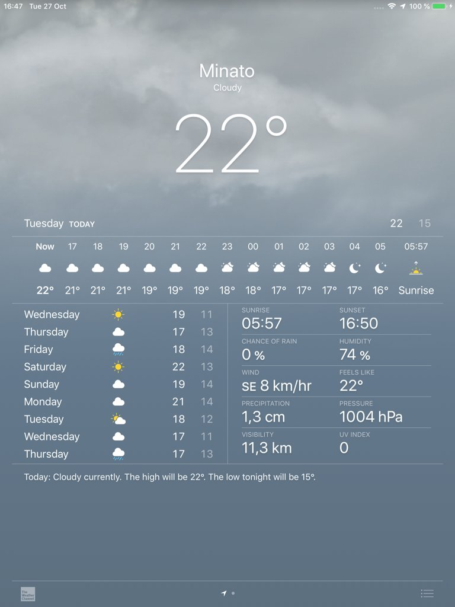
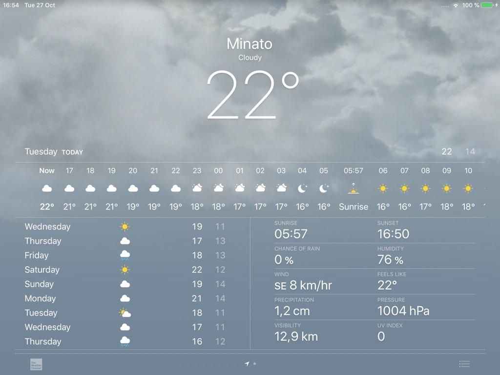
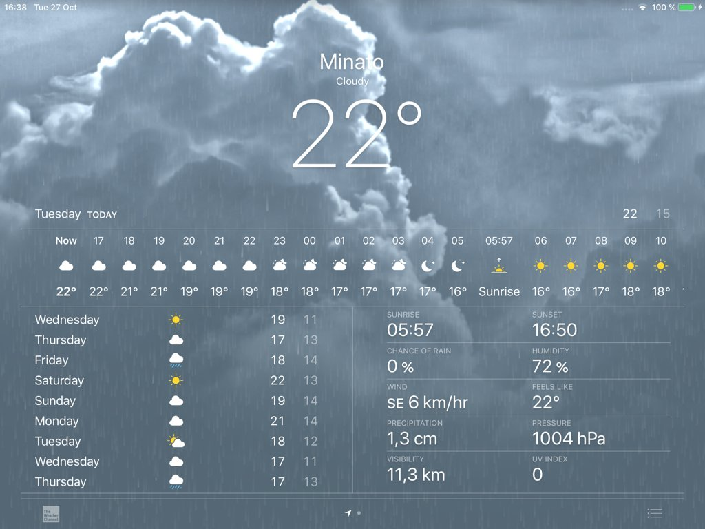
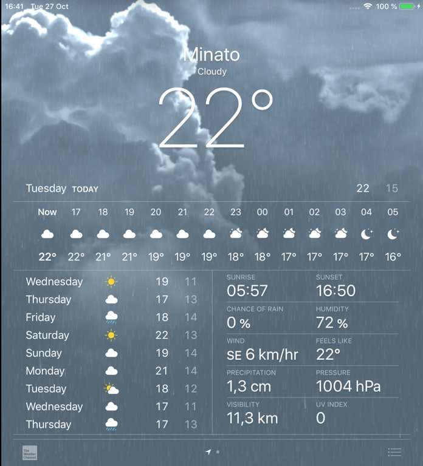
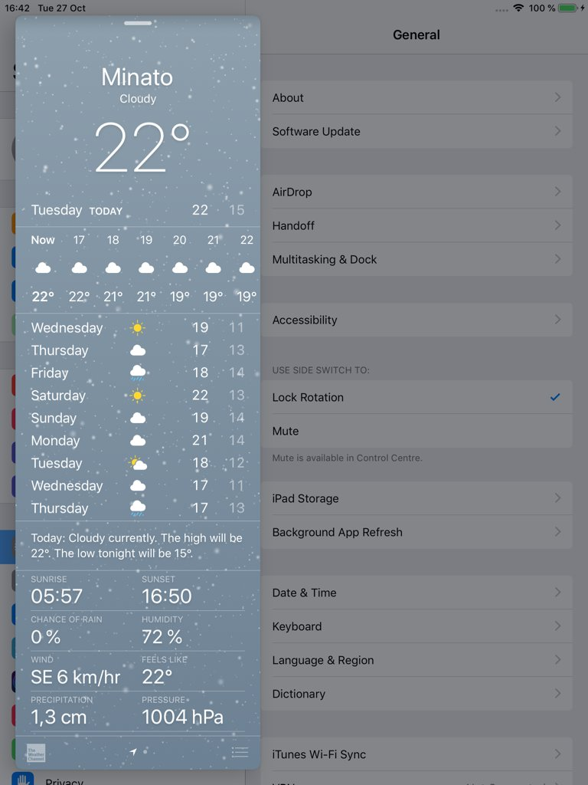
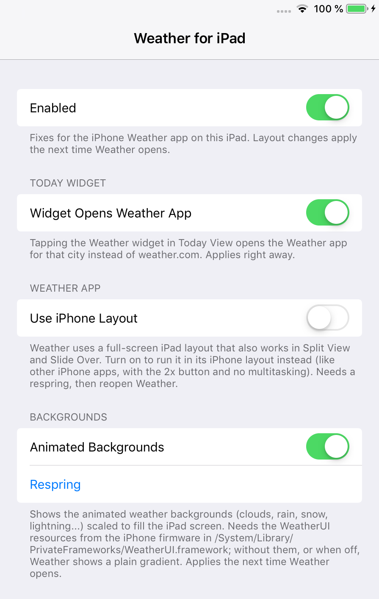

WeatherPad (iOS 12)
Apple's iPhone Weather app, running natively on iPad.
iPads on iOS 12 have no Weather app. WeatherPad makes Apple's iPhone Weather app for iOS 12 run like a real iPad app: it fills the whole screen, works in portrait and landscape, and adapts to Split View and Slide Over.
WeatherPad needs Apple's iPhone Weather app on the iPad. The installer downloads it and its animated backgrounds directly from Apple and installs them. Apple's files are not included in the package.
Screenshots






Features
- Adaptive iPad layout: two columns when the window is 660 pt or wider, iPhone layouts below that
- Works in portrait, landscape, Split View and Slide Over
- Tapping the Weather widget in Today View opens the Weather app instead of weather.com
- Animated weather backgrounds (clouds, rain, snow, lightning) scaled to fill the iPad screen
- Smooth header fade and snapping while scrolling, like on iPhone
- Optional "Use iPhone Layout" mode
Settings
Settings > Weather for iPad:
- Enabled: turns all fixes on or off. Layout changes apply the next time Weather opens.
- Widget Opens Weather App: tapping the Weather widget opens the Weather app for that city instead of weather.com. Applies right away.
- Use iPhone Layout: runs Weather like any iPhone app (2x button, no multitasking) instead of the iPad layout. Needs a respring, then reopen Weather.
- Animated Backgrounds: shows the animated backgrounds scaled to fill the screen. Needs the backgrounds from the installer; without them, or when off, Weather shows a plain gradient.
- Respring: restarts SpringBoard.
Compatibility
- Tested on iPad mini 2, iOS 12.5.8 (checkra1n + odysseyra1n / libhooker)
- Expected to work on iPads running iOS 12.x
- Needs Apple's iPhone Weather app, installed with the WeatherPad installer
Changelog
Version 1.2.3
- Renamed to include "(iOS 12)" in the name.
- Now installs only on iOS 12.x.
Version 1.2.2
- First public release.
- Native iPad layout, Today widget fix, animated backgrounds, header fade and snap fixes, iPhone layout option.
Information
| Version | 1.2.3 |
| Developer | itsAllexB |
| Size | 19 KB |
| License | GPL-3.0 |
| Source code | GitHub |
| Problems | Report an issue |
Unofficial. Not affiliated with or endorsed by Apple.